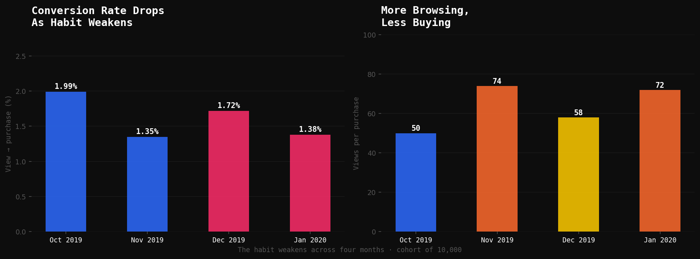
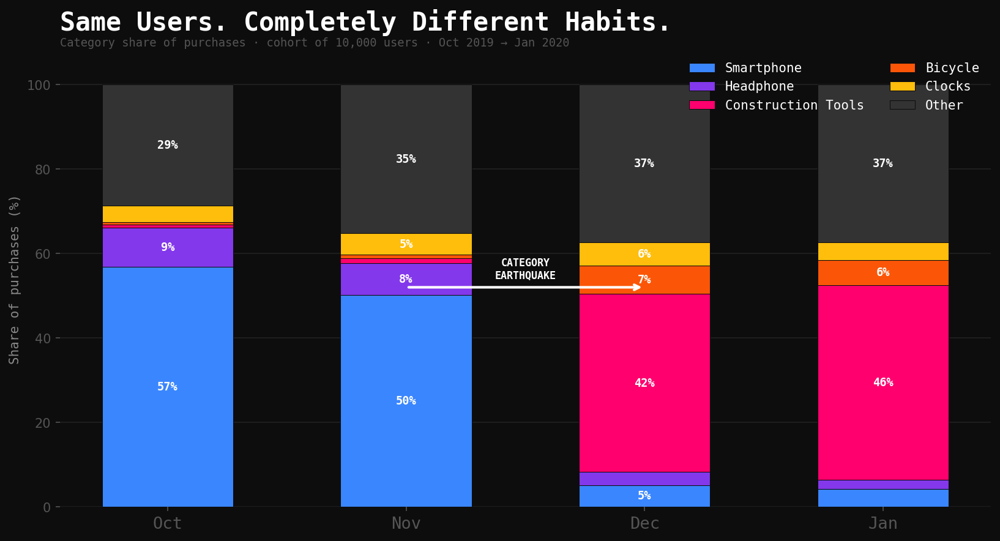
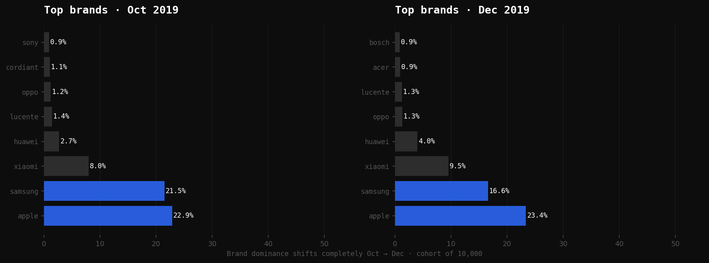
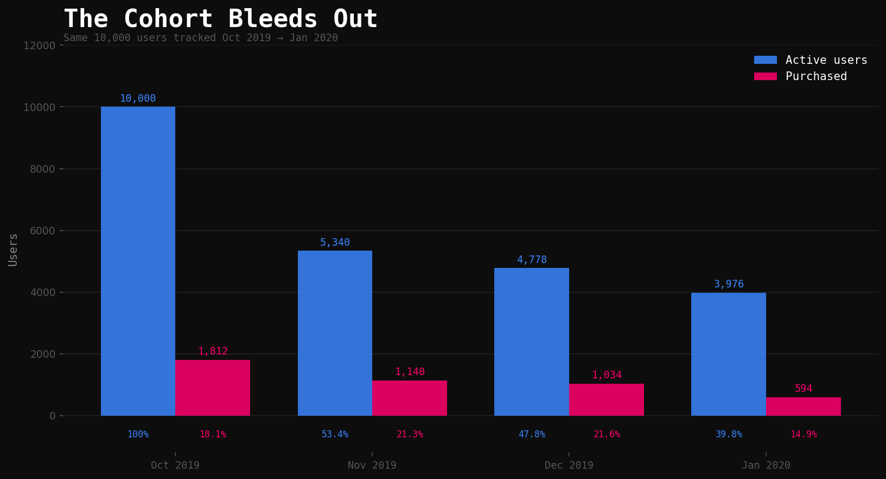
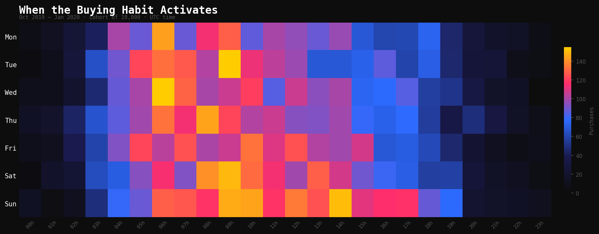
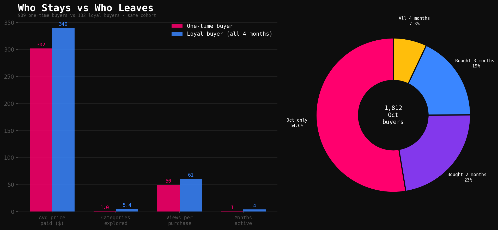
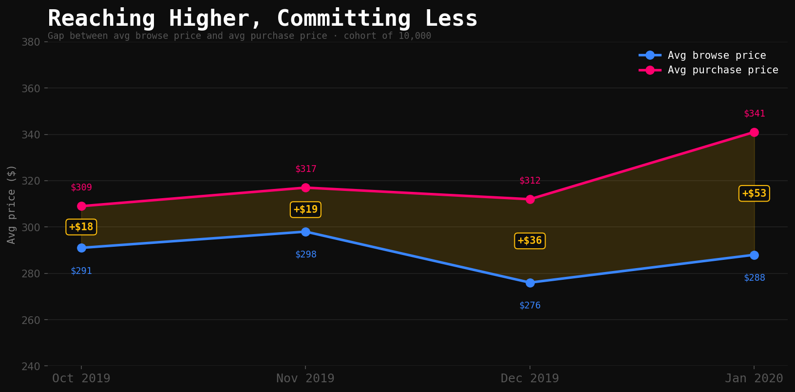
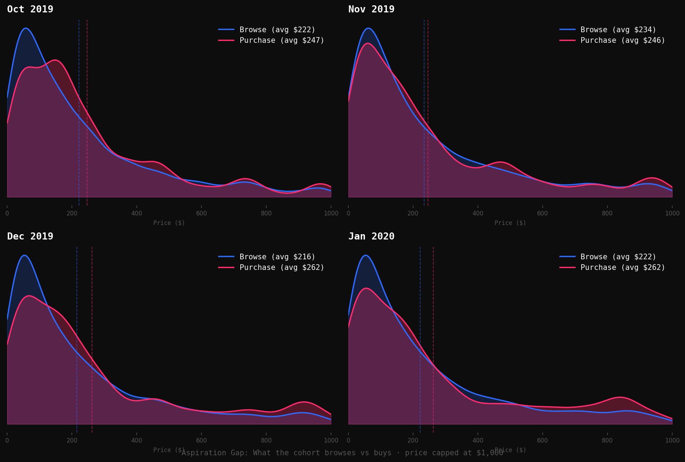

Then December
arrived.
arrived.
Same 10,000 users. Completely unrecognisable behaviour.
We tracked 10,000 real online shoppers across four months and 780,000 events. The answer isn't what you'd expect.
Picture a street with 100 people walking past a shop window. Only 2 of them step inside. That's online shopping — a 1.99% conversion rate from view to purchase in October 2019.
Of every 250,924 times someone in our cohort looked at a product, only 5,000 purchases happened. The habit of browsing is effortless. The habit of buying is fragile.
And it gets worse over time. By January 2020, the same cohort needed 72 views to produce a single purchase — up from 50 in October. More scrolling. Less committing.
This isn't about price. A $32 phone accessory and a $476 smartphone convert at almost identical rates. Something else is breaking the habit — and it starts long before checkout.

Left: conversion rate by month — drops from 1.99% in October to 1.35% in November, partially recovers in December, then falls again in January. Right: views needed per purchase — October requires 50 views, November spikes to 74. The buying habit is weakening.
In October, 57% of all purchases were smartphones. Samsung. Apple. The habit looked stable. November — still 50% smartphones. Then December hit.
Smartphones collapsed to 5% of purchases. Construction tools jumped from near-zero to 42%. Same users. Same cohort. Completely different habits. No warning. No gradual shift. Just an earthquake between November and December that tells you everything about how fragile buying habits really are.

The stacked bars make the earthquake unmissable. Blue (smartphone) fills Oct and Nov. Then Dec — the blue almost disappears and pink (construction tools) dominates. The annotation marks the exact transition point.

October: Apple and Samsung account for 44% of purchases combined. December: they're still present but the brand landscape has completely shifted. New brands — Bosch, Acer, tool manufacturers — enter the top 8. The brand habit broke alongside the category habit.
Of the 10,000 users we started with in October, only 3,976 were still active in January. More than 6,000 just stopped showing up. No cancellation. No complaint. Just silence.
Among those who actually bought something in October, 54.6% never purchased again in any of the three following months. One moment of commitment — and then the habit dissolved completely.

Blue = users still active (any event) each month. Pink = users who made a purchase. Both lines fall — but the buying habit collapses faster than general activity. By January, buyers are down to 594 from 1,812 in October.

Purchases aren't random. They cluster in specific time windows — midweek mornings and early afternoons (UTC). The buying habit, when it exists, activates at predictable moments. Yellow = highest purchase density.

The 132 users who bought in all four months had one thing in common: they shopped across 5.4 different categories on average. One-time buyers explored just 1.0 categories.
Loyalty isn't about loving one product or one brand. It's about being curious across many. The habit that sticks is breadth, not routine.
Loyal buyers also paid more — $340 per purchase on average versus $302 for one-time buyers. They weren't hunting for cheap deals. They were building a real relationship with the store.
And the aspiration gap — the difference between what users browse and what they buy — grew from $25 in October to $40 in January. As the habit weakened, the disconnect between wanting and committing widened.

Left: the key differences between one-time (pink) and loyal buyers (blue) across four metrics. Right: how October's 1,812 buyers split — 54.6% never returned.

The gap between avg browse price and avg purchase price grows across months. As the buying habit weakens, users reach for more expensive items but pull back more at the moment of commitment.
| Buyer type | n | Avg price paid | Categories explored | Months active | Key category |
|---|---|---|---|---|---|
| One-time (Oct only) | 989 | $302 | 1.0 | 1 | Smartphone (63.8%) |
| Returned once | ~420 | $315 | 2.1 | 2 | Smartphone + varied |
| Returned twice | ~343 | $326 | 3.8 | 3 | Mixed electronics |
| Loyal (all 4 months) | 132 | $340 | 5.4 | 4 | Smartphone + Tools + Audio |

Each panel shows one month. Blue = browse price distribution, red = purchase price distribution. The gap between the two vertical dashed lines is the aspiration gap. Notice it widens in December and January as the habit weakens.
We've shown you the pattern we found. But every dataset hides more than it reveals. Below are the interactive charts — explore them yourself. Does the category earthquake look the same when you zoom into individual months? Do the retention numbers surprise you?
Some questions worth asking: Which hour of the day produces the most purchases? Does the brand picture in November look more like October or December? What would you expect to happen in February?